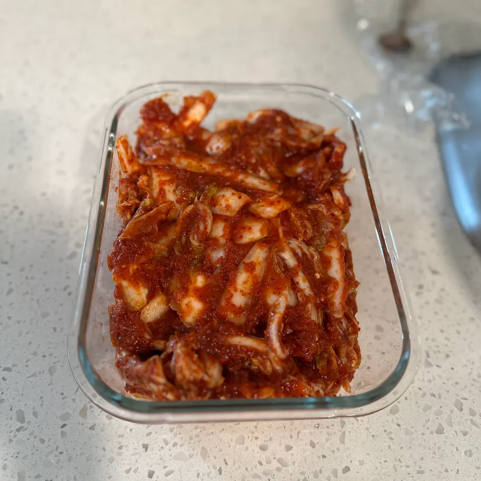

Summary
Korean fermented cabbage
Red chilli pepper powder
1L
Recipe
- Cut the cabbage leaves into slices.
- Rinse.
- Cover leaves with half cup of salt and leave for 30 minutes.
- Turn the cabbage over and leave for another 30 minutes.
- Rinse, then drain for 30 minutes.
- Blend the .
- Mix the .
- Mix the blended ingredients with the mixed ingredients.
- Coat the cabbage with the sauce.